- 00 开篇词 Spark性能调优，你该掌握这些“套路”.md.html
- 01 性能调优的必要性：Spark本身就很快，为啥还需要我调优？.md.html
- 02 性能调优的本质：调优的手段五花八门，该从哪里入手？.md.html
- 03 RDD：为什么你必须要理解弹性分布式数据集？.md.html
- 04 DAG与流水线：到底啥叫“内存计算”？.md.html
- 05 调度系统：“数据不动代码动”到底是什么意思？.md.html
- 06 存储系统：空间换时间，还是时间换空间？.md.html
- 07 内存管理基础：Spark如何高效利用有限的内存空间？.md.html
- 08 应用开发三原则：如何拓展自己的开发边界？.md.html
- 09 调优一筹莫展，配置项速查手册让你事半功倍！（上）.md.html
- 10 调优一筹莫展，配置项速查手册让你事半功倍！（下）.md.html
- 11 为什么说Shuffle是一时无两的性能杀手？.md.html
- 12 广播变量（一）：克制Shuffle，如何一招制胜！.md.html
- 13 广播变量（二）：如何让Spark SQL选择Broadcast Joins？.md.html
- 14 CPU视角：如何高效地利用CPU？.md.html
- 15 内存视角（一）：如何最大化内存的使用效率？.md.html
- 16 内存视角（二）：如何有效避免Cache滥用？.md.html
- 17 内存视角（三）：OOM都是谁的锅？怎么破？.md.html
- 18 磁盘视角：如果内存无限大，磁盘还有用武之地吗？.md.html
- 19 网络视角：如何有效降低网络开销？.md.html
- 20 RDD和DataFrame：既生瑜，何生亮？.md.html
- 21 Catalyst逻辑计划：你的SQL语句是怎么被优化的？（上）.md.html
- 22 Catalyst物理计划：你的SQL语句是怎么被优化的（下）？.md.html
- 23 钨丝计划：Tungsten给开发者带来了哪些福报？.md.html
- 24 Spark 3.0（一）：AQE的3个特性怎么才能用好？.md.html
- 25 Spark 3.0（二）：DPP特性该怎么用？.md.html
- 26 Join Hints指南：不同场景下，如何选择Join策略？.md.html
- 27 大表Join小表：广播变量容不下小表怎么办？.md.html
- 28 大表Join大表（一）：什么是“分而治之”的调优思路？.md.html
- 29 大表Join大表（二）：什么是负隅顽抗的调优思路？.md.html
- 30 应用开发：北京市小客车（汽油车）摇号趋势分析.md.html
- 31 性能调优：手把手带你提升应用的执行性能.md.html
- Spark UI（上）深入解读Spark作业的“体检报告”.md.html
- Spark UI（下）：深入解读Spark作业的“体检报告”.md.html
- 期末考试 “Spark性能调优”100分试卷等你来挑战！.md.html
- 结束语 在时间面前，做一个笃定学习的人.md.html
- 捐赠
22 Catalyst物理计划：你的SQL语句是怎么被优化的（下）？
你好，我是吴磊。
上一讲我们说了，Catalyst优化器的逻辑优化过程包含两个环节：逻辑计划解析和逻辑计划优化。逻辑优化的最终目的就是要把Unresolved Logical Plan从次优的Analyzed Logical Plan最终变身为执行高效的Optimized Logical Plan。
但是，逻辑优化的每一步仅仅是从逻辑上表明Spark SQL需要“做什么”，并没有从执行层面说明具体该“怎么做”。因此，为了把逻辑计划交付执行，Catalyst还需要把Optimized Logical Plan转换为物理计划。物理计划比逻辑计划更具体，它明确交代了Spark SQL的每一步具体该怎么执行。
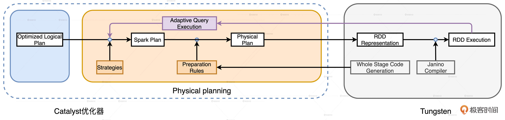
今天这一讲，我们继续追随小Q的脚步，看看它经过Catalyst的物理优化阶段之后，还会发生哪些变化。
优化Spark Plan
物理阶段的优化是从逻辑优化阶段输出的Optimized Logical Plan开始的，因此我们先来回顾一下小Q的原始查询和Optimized Logical Plan。
val userFile: String = _
val usersDf = spark.read.parquet(userFile)
usersDf.printSchema
/**
root
|-- userId: integer (nullable = true)
|-- name: string (nullable = true)
|-- age: integer (nullable = true)
|-- gender: string (nullable = true)
|-- email: string (nullable = true)
*/
val users = usersDf
.select("name", "age", "userId")
.filter($"age" < 30)
.filter($"gender".isin("M"))
val txFile: String = _
val txDf = spark.read.parquet(txFile)
txDf.printSchema
/**
root
|-- txId: integer (nullable = true)
|-- userId: integer (nullable = true)
|-- price: float (nullable = true)
|-- volume: integer (nullable = true)
*/
val result = txDF.select("price", "volume", "userId")
.join(users, Seq("userId"), "inner")
.groupBy(col("name"), col("age")).agg(sum(col("price") * col("volume")).alias("revenue"))
result.write.parquet("_")
两表关联的查询语句经过转换之后，得到的Optimized Logical Plan如下图所示。注意，在逻辑计划的根节点，出现了“Join Inner”字样，Catalyst优化器明确了这一步需要做内关联。但是，怎么做内关联，使用哪种Join策略来进行关联，Catalyst并没有交代清楚。因此，逻辑计划本身不具备可操作性。
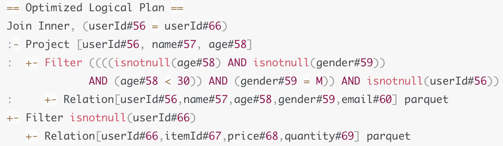
为了让查询计划（Query Plan）变得可操作、可执行，Catalyst的物理优化阶段（Physical Planning）可以分为两个环节：优化Spark Plan和生成Physical Plan。
- 在优化Spark Plan的过程中，Catalyst基于既定的优化策略（Strategies），把逻辑计划中的关系操作符一一映射成物理操作符，生成Spark Plan。
- 在生成Physical Plan过程中，Catalyst再基于事先定义的Preparation Rules，对Spark Plan做进一步的完善、生成可执行的Physical Plan。
那么问题来了，在优化Spark Plan的过程中，Catalyst都有哪些既定的优化策略呢？从数量上来说，Catalyst有14类优化策略，其中有6类和流计算有关，剩下的8类适用于所有的计算场景，如批处理、数据分析、机器学习和图计算，当然也包括流计算。因此，我们只需了解这8类优化策略。
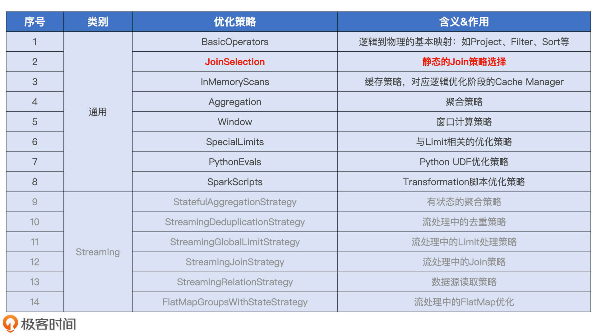
所有优化策略在转换方式上都大同小异，都是使用基于模式匹配的偏函数（Partial Functions），把逻辑计划中的操作符平行映射为Spark Plan中的物理算子。比如，BasicOperators策略直接把Project、Filter、Sort等逻辑操作符平行地映射为物理操作符。其他策略的优化过程也类似，因此，在优化Spark Plan这一环节，咱们只要抓住一个“典型”策略，掌握它的转换过程即可。
那我们该抓谁做“典型”呢？我觉得，这个“典型”至少要满足两个标准：一，它要在我们的应用场景中非常普遍；二，它的取舍对于执行性能的影响最为关键。以这两个标准去遴选上面的8类策略，我们分分钟就能锁定JoinSelection。接下来，我们就以JoinSelection为例，详细讲解这一环节的优化过程。
如果用一句话来概括JoinSelection的优化过程，就是结合多方面的信息，来决定在物理优化阶段采用哪种Join策略。那么问题来了，Catalyst都有哪些Join策略？
Catalyst都有哪些Join策略？
结合Joins的实现机制和数据的分发方式，Catalyst在运行时总共支持5种Join策略，分别是Broadcast Hash Join（BHJ）、Shuffle Sort Merge Join（SMJ）、Shuffle Hash Join（SHJ）、Broadcast Nested Loop Join（BNLJ）和Shuffle Cartesian Product Join（CPJ）。
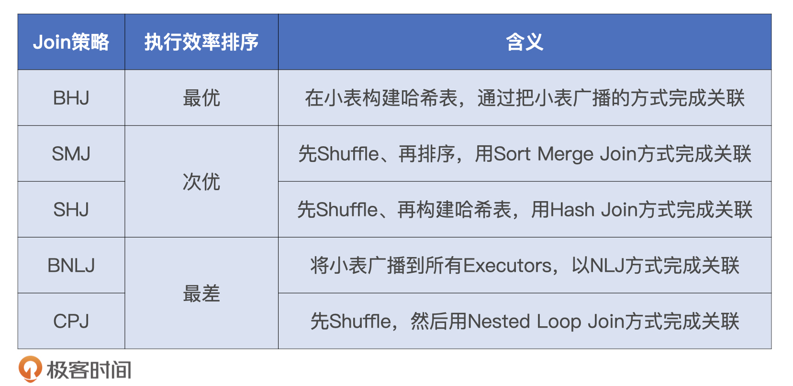
通过上表中5种Join策略的含义，我们知道，它们是来自2种数据分发方式（广播和Shuffle）与3种Join实现机制（Hash Joins、Sort Merge Joins和Nested Loop Joins）的排列组合。那么，在JoinSelection的优化过程中，Catalyst会基于什么逻辑，优先选择哪种Join策略呢？
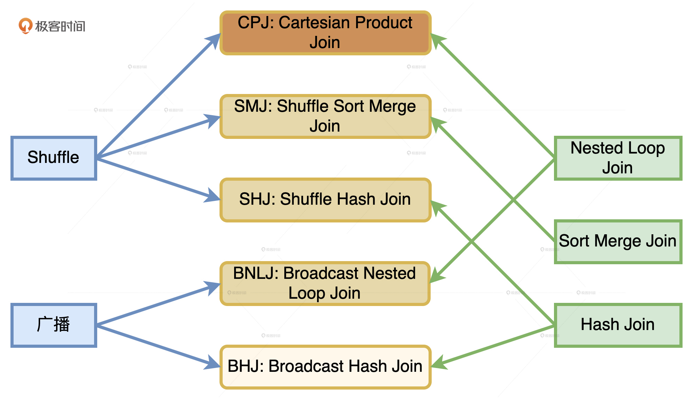
JoinSelection如何决定选择哪一种Join策略？
逻辑其实很简单，Catalyst总会尝试优先选择执行效率最高的策略。具体来说，在选择join策略的时候，JoinSelection会先判断当前查询是否满足BHJ所要求的先决条件：如果满足就立即选中BHJ；如果不满足，就继续判断当前查询是否满足SMJ的先决条件。以此类推，直到最终选无可选，用CPJ来兜底。
那么问题来了，这5种Join策略都需要满足哪些先决条件呢？换句话说，JoinSelection做决策时都要依赖哪些信息呢？
总的来说，这些信息分为两大类，第一类是“条件型”信息，用来判决5大Join策略的先决条件。第二类是“指令型”信息，也就是开发者提供的Join Hints。
我们先来说“条件型”信息，它包含两种。第一种是Join类型，也就是是否等值、连接形式等，这种信息的来源是查询语句本身。第二种是内表尺寸，这些信息的来源就比较广泛了，可以是Hive表之上的ANALYZE TABLE语句，也可以是Spark对于Parquet、ORC、CSV等源文件的尺寸预估，甚至是来自AQE的动态统计信息。
5大Join策略对于这些信息的要求，我都整理到了下面的表格里，你可以看一看。
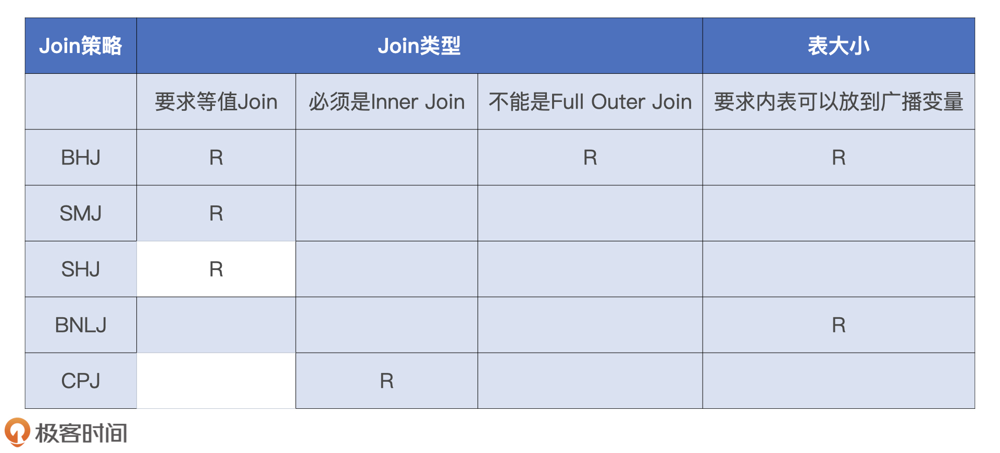
指令型信息也就是Join Hints，它的种类非常丰富，它允许我们把个人意志凌驾于Spark SQL之上。比如说，如果我们对小Q的查询语句做了如下的调整，JoinSelection在做Join策略选择的时候就会优先尊重我们的意愿，跳过SMJ去选择排序更低的SHJ。具体的代码示例如下：
val result = txDF.select("price", "volume", "userId")
.join(users.hint("shuffle_hash"), Seq("userId"), "inner")
.groupBy(col("name"), col("age")).agg(sum(col("price") *
col("volume")).alias("revenue"))
熟悉了JoinSelection选择Join策略的逻辑之后，我们再来看小Q是怎么选择的。小Q是典型的星型查询，也就是事实表与维度表之间的数据关联，其中维表还带过滤条件。在决定采用哪种Join策略的时候，JoinSelection优先尝试判断小Q是否满足BHJ的先决条件。
显然，小Q是等值的Inner Join，因此表格中BHJ那一行的前两个条件小Q都满足。但是，内表users尺寸较大，超出了广播阈值的默认值10MB，不满足BHJ的第三个条件。因此，JoinSelection不得不忍痛割爱、放弃BHJ策略，只好退而求其次，沿着表格继续向下，尝试判断小Q是否满足SMJ的先决条件。
SMJ的先决条件很宽松，查询语句只要是等值Join就可以。小Q自然是满足这个条件的，因此JoinSelection最终给小Q选定的Join策略就是SMJ。下图是小Q优化过后的Spark Plan，从中我们可以看到，查询计划的根节点正是SMJ。
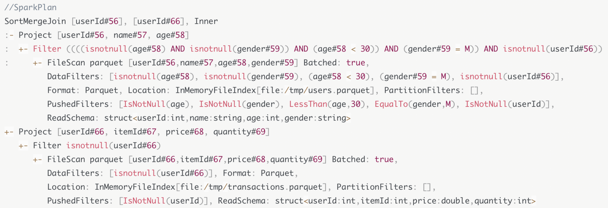
现在我们知道了Catalyst都有哪些Join策略，JoinSelection如何对不同的Join策略做选择。小Q也从Optimized Logical Plan摇身一变，转换成了Spark Plan，也明确了在运行时采用SMJ来做关联计算。不过，即使小Q在Spark Plan中已经明确了每一步该“怎么做”，但是，Spark还是做不到把这样的查询计划转化成可执行的分布式任务，这又是为什么呢？
生成Physical Plan
原来，Shuffle Sort Merge Join的计算需要两个先决条件：Shuffle和排序。而Spark Plan中并没有明确指定以哪个字段为基准进行Shuffle，以及按照哪个字段去做排序。
因此，Catalyst需要对Spark Plan做进一步的转换，生成可操作、可执行的Physical Plan。具体怎么做呢？我们结合Catalyst物理优化阶段的流程图来详细讲讲。
从上图中我们可以看到，从Spark Plan到Physical Plan的转换，需要几组叫做Preparation Rules的规则。这些规则坚守最后一班岗，负责生成Physical Plan。那么，这些规则都是什么，它们都做了哪些事情呢？我们一起来看一下。
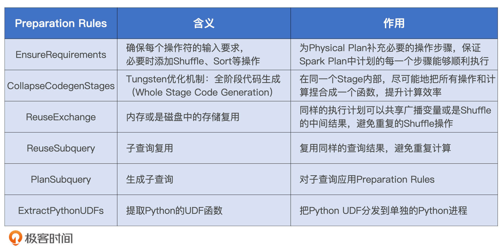
Preparation Rules有6组规则，这些规则作用到Spark Plan之上就会生成Physical Plan，而Physical Plan最终会由Tungsten转化为用于计算RDD的分布式任务。
小Q的查询语句很典型，也很简单，并不涉及子查询，更不存在Python UDF。因此，在小Q的例子中，我们并不会用到子查询、数据复用或是Python UDF之类的规则，只有EnsureRequirements和CollapseCodegenStages这两组规则会用到小Q的Physical Plan转化中。
实际上，它们也是结构化查询中最常见、最常用的两组规则。今天，我们先来重点说说EnsureRequirements规则的含义和作用。至于CollapseCodegenStages规则，它实际上就是Tungsten的WSCG功能，我们下一讲再详细说。
EnsureRequirements规则
EnsureRequirements翻译过来就是“确保满足前提条件”，这是什么意思呢？对于执行计划中的每一个操作符节点，都有4个属性用来分别描述数据输入和输出的分布状态。
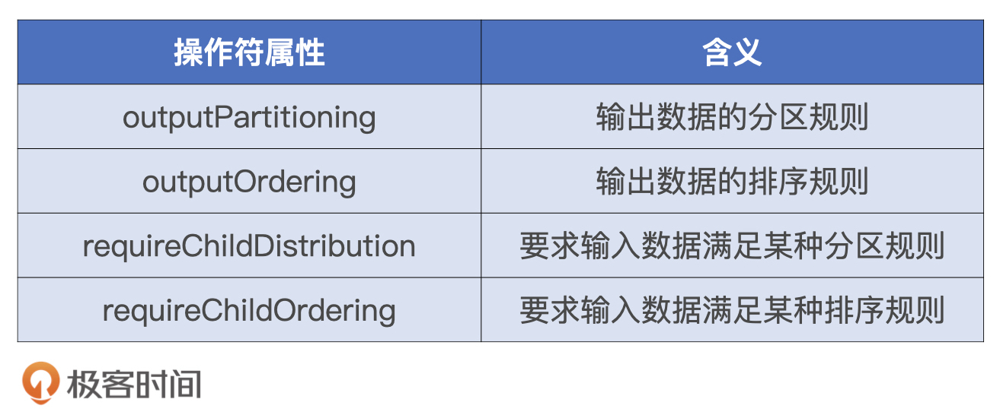
EnsureRequirements规则要求，子节点的输出数据要满足父节点的输入要求。这又怎么理解呢？
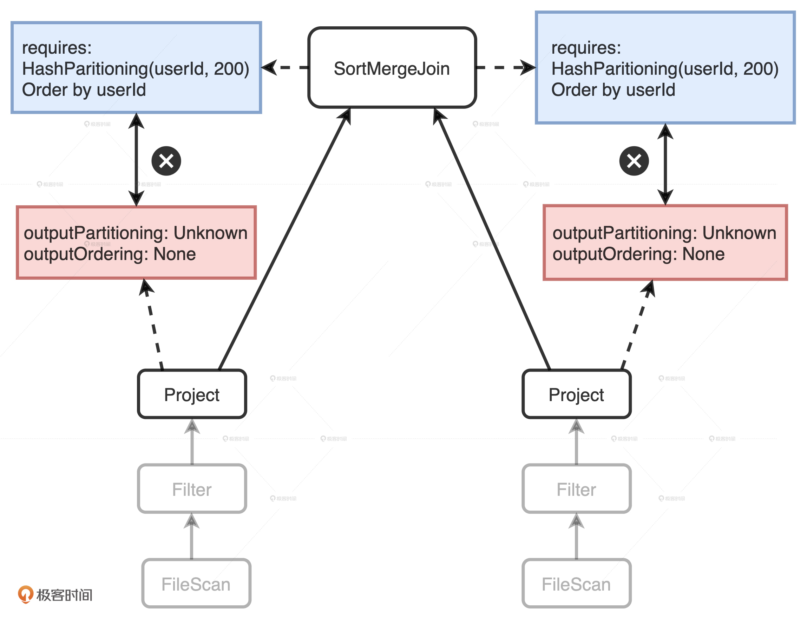
我们以小Q的Spark Plan树形结构图为例，可以看到：图中左右两个分支分别表示扫描和处理users表和transactions表。在树的最顶端，根节点SortMergeJoin有两个Project子节点，它们分别用来表示users表和transactions表上的投影数据。这两个Project的outputPartitioning属性和outputOrdering属性分别是Unknow和None。因此，它们输出的数据没有按照任何列进行Shuffle或是排序。
但是，SortMergeJoin对于输入数据的要求很明确：按照userId分成200个分区且排好序，而这两个Project子节点的输出显然并没有满足父节点SortMergeJoin的要求。这个时候，EnsureRequirements规则就要介入了，它通过添加必要的操作符，如Shuffle和排序，来保证SortMergeJoin节点对于输入数据的要求一定要得到满足，如下图所示。
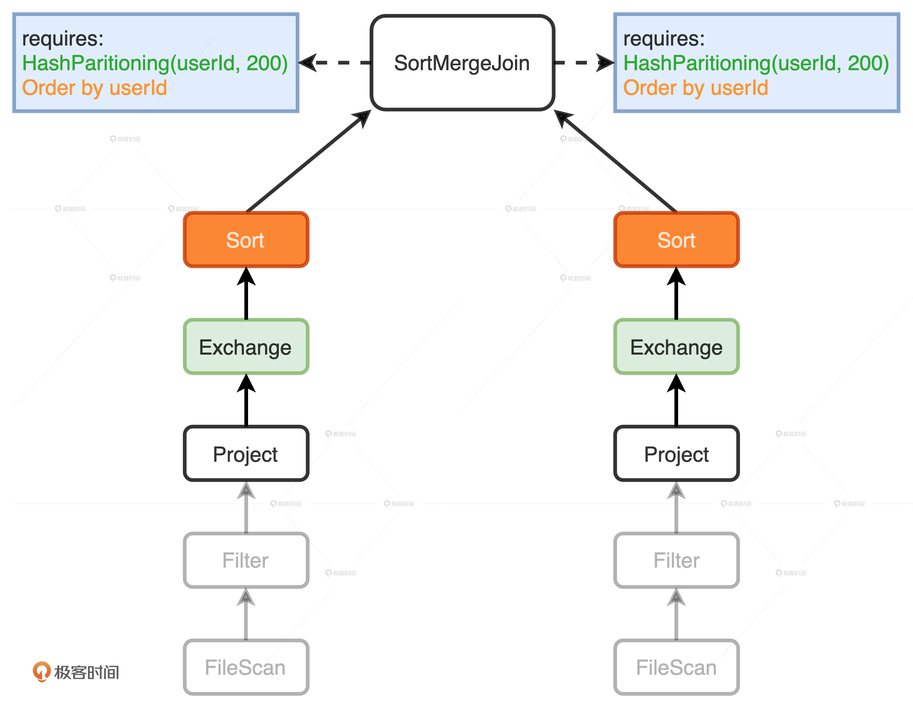
在两个Project节点之后，EnsureRequirements规则分别添加了Exchange和Sort节点。其中Exchange节点代表Shuffle操作，用来满足SortMergeJoin对于数据分布的要求；Sort表示排序，用于满足SortMergeJoin对于数据有序的要求。
添加了必需的节点之后，小Q的Physical Plan已经相当具体了。这个时候，Spark可以通过调用Physical Plan的doExecute方法，把结构化查询的计算结果，转换成RDD[InternalRow]，这里的InternalRow，就是Tungsten设计的定制化二进制数据结构，这个结构我们在内存视角（一）有过详细的讲解，你可以翻回去看看。通过调用RDD[InternalRow]之上的Action算子，Spark就可以触发Physical Plan从头至尾依序执行。
最后，我们再来看看小Q又发生了哪些变化。
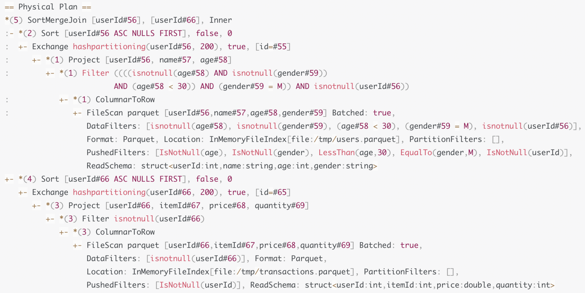
首先，我们看到EnsureRequirements规则在两个分支的顶端分别添加了Exchange和Sort操作，来满足根节点SortMergeJoin的计算需要。其次，如果你仔细观察的话，会发现Physical Plan中多了很多星号“*”，这些星号的后面还带着括号和数字，如图中的“*（3）”、“*（1）”。这种星号“*”标记表示的就是WSCG，后面的数字代表Stage编号。因此，括号中数字相同的操作，最终都会被捏合成一份“手写代码”，也就是我们下一讲要说的Tungsten的WSCG。
至此，小Q从一个不考虑执行效率的“叛逆少年”，就成长为了一名执行高效的“专业人士”，Catalyst这位人生导师在其中的作用功不可没。
小结
为了把逻辑计划转换为可以交付执行的物理计划，Spark SQL物理优化阶段包含两个环节：优化Spark Plan和生成Physical Plan。
在优化Spark Plan这个环节，Catalyst基于既定的策略把逻辑计划平行映射为Spark Plan。策略很多，我们重点掌握JoinSelection策略就可以，它被用来在运行时选择最佳的Join策略。JoinSelection按照BHJ > SMJ > SHJ > BNLJ > CPJ的顺序，依次判断查询语句是否满足每一种Join策略的先决条件进行“择优录取”。
如果开发者不满足于JoinSelection默认的选择顺序，也就是BHJ > SMJ > SHJ > BNLJ > CPJ，还可以通过在SQL或是DSL语句中引入Join hints，来明确地指定Join策略，从而把自己的意愿凌驾于Catalyst之上。不过，需要我们注意的是，要想让指定的Join策略在运行时生效，查询语句也必须要满足其先决条件才行。
在生成Physical Plan这个环节，Catalyst基于既定的几组Preparation Rules，把优化过后的Spark Plan转换成可以交付执行的物理计划，也就是Physical Plan。在这些既定的Preparation Rules当中，你需要重点掌握EnsureRequirements规则。
EnsureRequirements用来确保每一个操作符的输入条件都能够得到满足，在必要的时候，会把必需的操作符强行插入到Physical Plan中。比如对于Shuffle Sort Merge Join来说，这个操作符对于子节点的数据分布和顺序都是有明确要求的，因此，在子节点之上，EnsureRequirements会引入新的操作符如Exchange和Sort。
每日一练
3种Join实现方式和2种网络分发模式，明明应该有6种Join策略，为什么Catalyst没有支持Broadcast Sort Merge Join策略？
期待在留言区看到你的思考和答案，我们下一讲见！
© 2019 - 2023 Liangliang Lee. Powered by gin and hexo-theme-book.